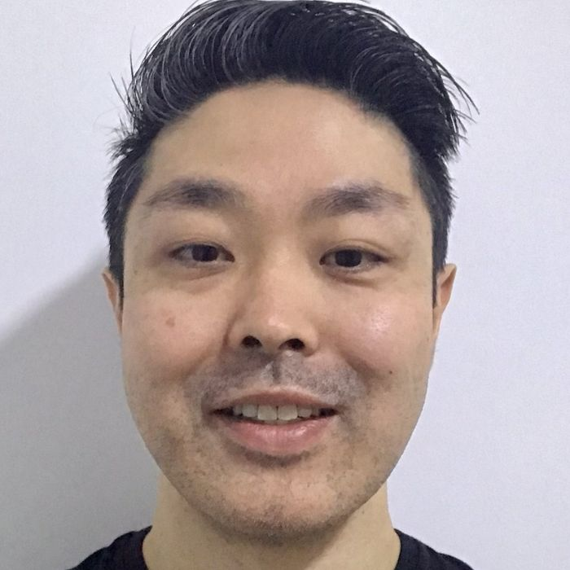
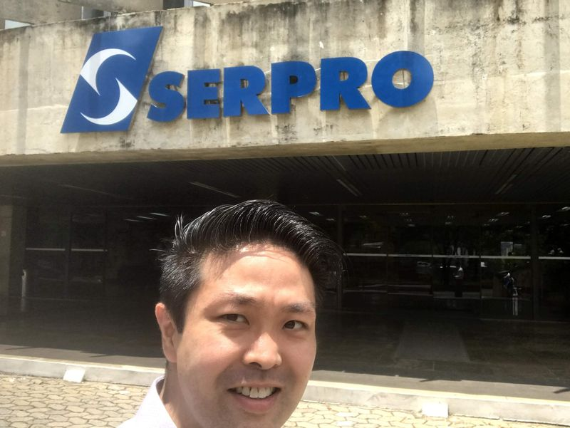
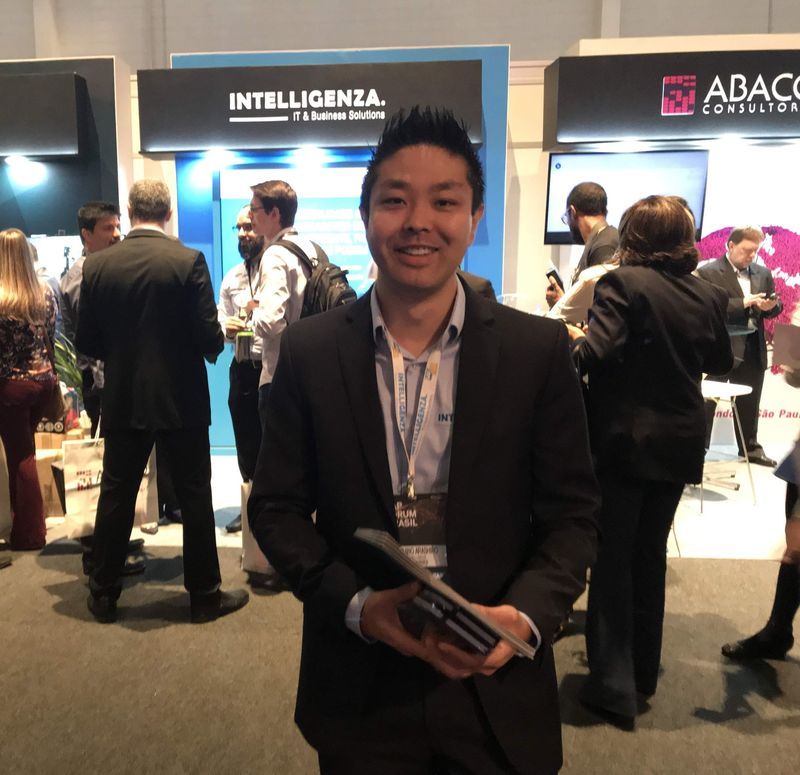
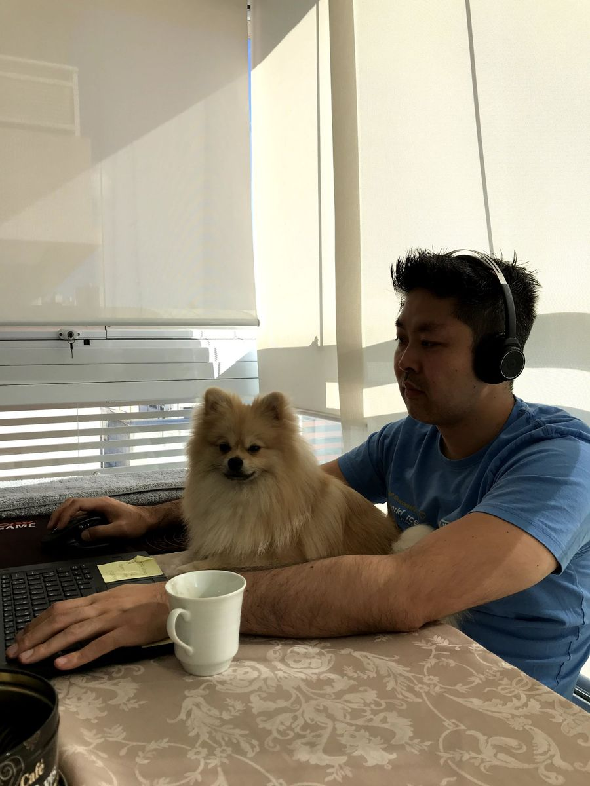
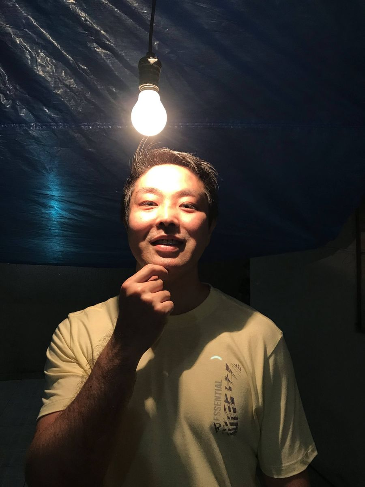
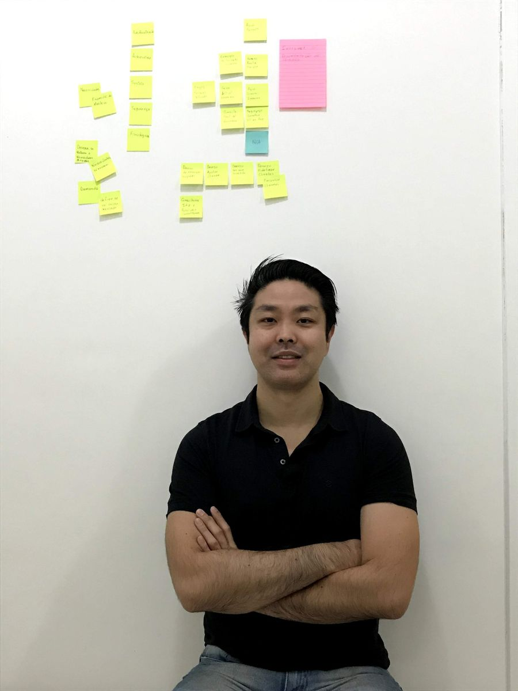
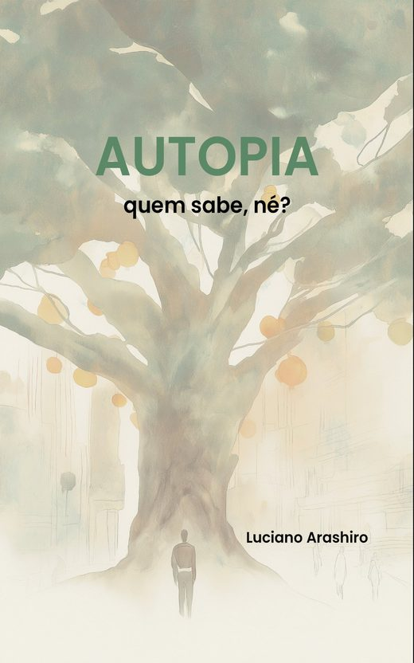
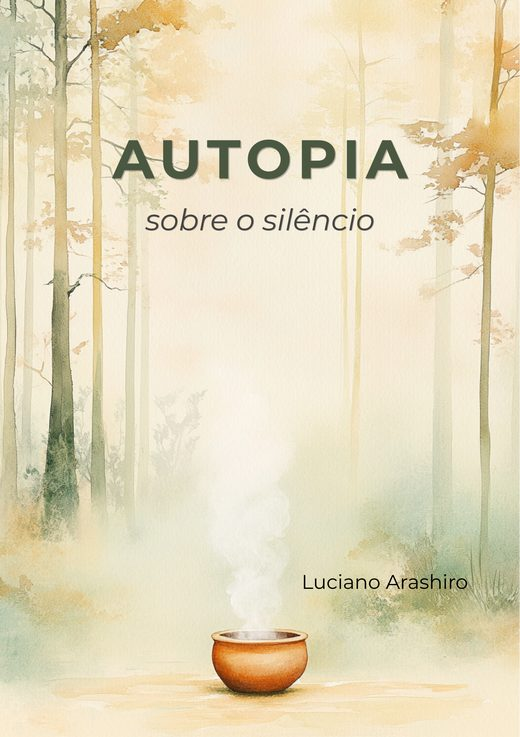
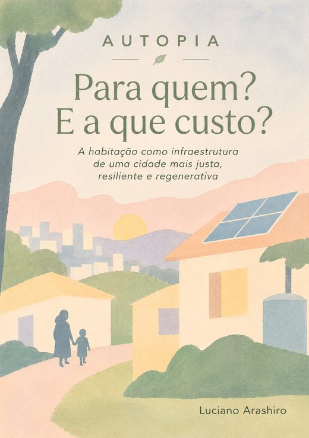
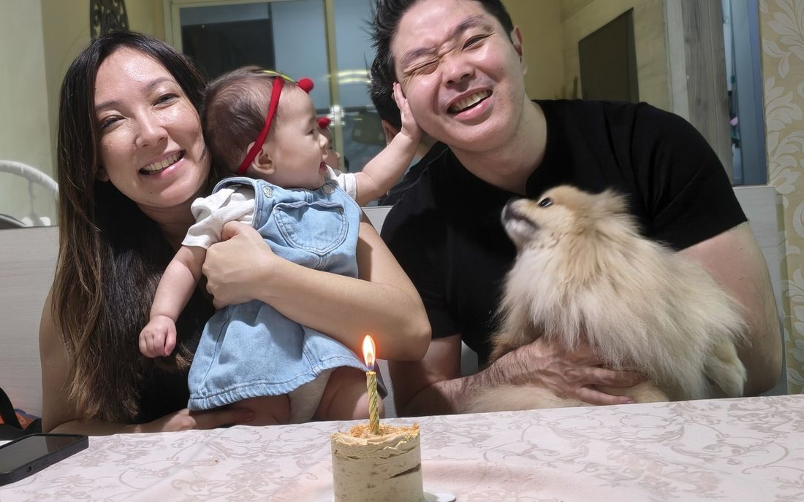

Estar junto
Ser uma comunidade que se ajuda, torce e desafia as pessoas a serem melhores a cada dia.
Trabalho com tecnologia de RH e SAP, escrevo livros e faço tudo pensando em quem vem depois.
Consultor funcional SAP RH desde 2005 · folha, ponto e eSocial · hoje em migração para SuccessFactors · São Paulo

Árvore cresce em camadas, e cada camada segura a próxima.
PL/SQL na Oracle e Progress 4GL. Foi aqui que aprendi a pensar como sistema.
Funcional SAP HCM, passei por quase todos os módulos e me especializei em ponto.
Responsável por um produto de eSocial na consultoria e focal point funcional no go-live de 40 clientes, com 40 a 50 consultores no projeto.
Liderando uma equipe funcional de até 8 pessoas, para cada regra de negócio fazer sentido.
Pelo lado funcional, ajudei a criar os produtos de totalizadores e os relatórios de eSocial e de conferência, e as BAdIs de cada atualização do eSocial.
Na sustentação de uma plataforma de gestão de ponto, com rollouts, projetos internacionais e um go-live de clientes americanos. Pedia JavaScript no dia a dia, e tenho certificações de parceiro em configuração e interfaces.
O anel em formação: cuido da migração de dados e das integrações para EC e ECP, pelo lado funcional.
Comecei como desenvolvedor, fora do mundo SAP. Depois virei funcional e segui funcional. Hoje ajudo nas integrações pelo lado funcional, e o passado com código me ajuda a entender e a conversar com quem constrói.


Estou num projeto que leva o RH de SAP HCM/ECC para o Employee Central e o Employee Central Payroll. Cuido da migração de dados e das integrações, pelo lado funcional, e estou aprendendo muito no caminho.
formação SAP, de 2005 até hoje
Deixo o caminho mais fácil para quem vem depois.
Tudo o que a gente cria hoje, seja um sistema, um processo ou um texto, vai ser herdado por alguém amanhã. Eu chamo isso de ser um bom ancestral. No dia a dia, funciona assim:
Mexi em alguma coisa, atualizo a documentação na hora. É como lavar a louça logo depois de usar: pequenos cuidados diários evitam que o trabalho se acumule, e quem chega depois encontra tudo em ordem.

Gosto de avaliar, estudar e explorar antes de decidir. E registro o motivo de cada escolha junto com o resultado, porque o que foi feito fica, mas o porquê costuma se perder.

Reunião que vira monólogo não é comigo. O que um bom texto resolve fica no assíncrono, e o encontro serve para decidir junto. E ensino enquanto faço, para ninguém ficar sendo o único que sabe.

Tudo o que é digital também consome energia e recursos. Guardar o que serve, rodar o que precisa e perguntar se precisa mesmo também é cuidar de quem vem depois.
Um encontro presencial por mês, no ritmo ágil, para mostrar a entrega. Testes e entrega final, 100% presenciais.
Fui focal point funcional no go-live do eSocial numa consultoria: 40 clientes entrando juntos, com 40 a 50 consultores entre funcionais, gestores e desenvolvedores. Depois, como arquiteto, ajudei a criar os produtos de totalizadores, os relatórios de conferência e as BAdIs que acompanhavam cada atualização do governo.
O que ficouUma equipe com o conhecimento, uma liderança que acolhe e a possibilidade de seguir com o trabalho sem depender de mim.
Uma consultoria tinha deixado um projeto de SAP HCM pela metade, porque já não dava lucro. A consultoria abraçou o cliente, e finalizamos o projeto em um mês e meio.
O que ficouTreinei o key-user mostrando cada configuração para ele dar o suporte. Quando a empresa decidiu deixar o SAP, ele foi contratado por uma consultoria como consultor de folha e ponto. Anos depois, veio trabalhar com a gente.
“…nos impulsionou a darmos sempre o melhor de nós. Sou muito grata a você por ter acreditado em mim!”
“…tem um conhecimento profundo de SAP e superou as expectativas com resultados excelentes.”
Projetos que eu construí e textos sobre tecnologia de RH, organização e pessoas. Aqui estão os destaques. O resto fica na estante.
Como usar o método P.A.R.A. para organizar os favoritos dentro do próprio SAP.
Uma introdução ao uso do SAP Crystal para criar dashboards a partir dos relatórios do WorkForce Software.
O PIB mede o que um país produz. O IRIS tenta medir o que ele está deixando para quem vem depois. Cinco dimensões, sem ranking: cada país compete consigo mesmo ao longo do tempo. Tem manifesto, simulação até 2075 e versão em português e inglês.
Imagine um coach no meio de uma sessão, sem notebook, só com o celular na mão. O Kotini reúne 9 ferramentas prontas para aplicar ali mesmo, como Clareza Plena, Valores, SWOT Pessoal e Roda de Competências.
As ideias de Phil Stutz e o que elas ensinam sobre cuidar de si.
Na estante ficam todos os projetos e textos, com filtro por tema e busca.
Também faço templates, relatórios e apresentações em Word e PowerPoint. Me chama no 99freelas ↗
Escrevo romances e ensaios sobre um futuro em que a tecnologia resolveu a fome e a pobreza, mas não resolveu o que é humano. Quero que o leitor feche o livro com saudade de um mundo que ainda não existe.

Uma releitura da Utopia de Thomas More. Numa São Paulo pós-escassez, três dias de festival na Avenida Paulista juntam um contador de histórias, um filho que se afastou e uma artista nascida no mundo novo. Eles só descobrem no fim que são família.

Miguel e a filha, Íris, perdem a esposa e mãe de repente. Íris para de falar. Potira, anciã da tribo Uaraci, acompanha o luto dos dois sem explicar nada. É um livro sobre cura pela presença.

A habitação como infraestrutura de uma cidade mais justa, resiliente e regenerativa. Um ensaio que leva as ideias de Autopia para o mundo real.
Honrar o passado, sonhar com o futuro e viver o presente.
meu lemaVer, lembrar, trazer o melhor da humanidade e florescer com o mundo.
Ser uma comunidade que se ajuda, torce e desafia as pessoas a serem melhores a cada dia.
Acreditar no próprio potencial e trazer um impacto positivo no mundo, para o mundo.
Aprendizado bom é aprendizado vivido.
Aquietar a alma para ver as pequenas felicidades e sabedorias do dia a dia.
Ser uma comunidade que se ajuda, torce e desafia as pessoas a serem melhores a cada dia.

Se você procura alguém que estuda o problema, documenta enquanto faz e deixa o caminho pronto para o próximo, me chama no LinkedIn.